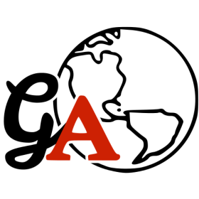

Motivation
The Research Problem
- NASA SnowEx (2017–2023): a multi-year field campaign to measure snow properties across diverse landscapes
- Ground measurements collected for validation of airborne and satellite remote sensing
- Rich, structured datasets — a natural fit for a relational database

The Challenge
Database Access
Previous Approach
- Required local CLI client installation
- Distributed AWS credentials to all users
- Security concerns with credential management
- User environment configuration burden

Lambda Solution
- Secure, passwordless API access
- No credential distribution needed
- API Gateway handles authentication
- Clean separation of concerns

Understanding the Technology
What is AWS Lambda?
"Serverless" compute — on-demand function execution
- Write a function, upload it to AWS, and it runs only when triggered
- No servers to provision or manage — AWS handles all infrastructure
- You pay only for compute time actually used, measured in milliseconds
- Ideal for sporadic queries and bursty research workloads
Cost advantage: Traditional EC2 runs 24/7 whether you use it or not. Lambda runs only when invoked — perfect for lightweight, event-driven tasks.
Use Cases
When to Use Lambda
01 · Data Processing Pipelines
Automatically process uploaded files — satellite images, sensor data, research datasets — without managing infrastructure.
02 · API for Database Queries

Clean, stateless API layer — exactly what we're using for SnowEx. Scales automatically with query load.
03 · Service Integration
Glue between AWS services — respond to events, orchestrate workflows, without persistent infrastructure.
Know the Boundaries
What Lambda is NOT Good For

15-Minute Execution Limit
Lambda kills your function after 15 minutes — no exceptions.
Not suitable for batch compute, HPC, or long-running simulations.
Cold Start Latency
First invocation can take seconds to spin up, especially with container images.
Impacts interactive applications where milliseconds matter.

Package Size Constraints
Scientific Python libraries are large — NumPy, Pandas, SciPy quickly exceed limits.
Container images help, but add Docker/ECR complexity.
 "Serverless" ≠ "run any analysis without thinking about infrastructure" — Lambda fills a specific niche.
"Serverless" ≠ "run any analysis without thinking about infrastructure" — Lambda fills a specific niche.
Live Demo
Console Walkthrough

Demo: Creating a Basic Lambda Function
- Create function using "Author from scratch" (default Python hello world)
- Show the Lambda console layout: Code, Test, Monitor, Configuration tabs
- Run the default function and view execution logs
- Note the 50MB deployment package size limit for zip files
The Solution
Why Container Images?
The Problem: Zip File Size Limits
Scientific Python dependencies quickly exceed Lambda's 50MB zip limit

= > 50MBThe Solution: Container Images (10GB limit)
Docker packages your code and all dependencies into a container image. ECR (Elastic Container Registry) is where AWS stores those images.
Putting It All Together
SnowEx Lambda Architecture
Container Image
Built with Dockerfile, pushed to ECR, includes all scientific Python dependencies
Lambda Handler
Python function retrieves credentials from Secrets Manager, executes SQL query
Function URL
HTTPS endpoint with AWS IAM authentication — no public access
PostgreSQL Database
Running on EC2, credentials managed by Secrets Manager
Result: Researchers query the database through a secure, serverless API without managing infrastructure or credentials